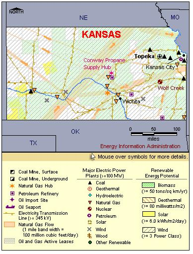

State Overview
There is one operating nuclear power plant in Kansas:
Wolf Creek in Coffey County
- While undergoing its 12th scheduled refueling outage in April 2002, plant personnel used an ROV (Remotely Operated Vehicle, in this case an unmanned miniature submarine) to inspect the interior of the reactor vessel. The submarine was able to hover longer than would have been safe for a human inspector, enabling closer inspection. Since then, Wolf Creek has continued to use an ROV for inspections.
Contribution of Nuclear Power
Among States with nuclear power, Kansas is one of the smallest in terms of nuclear capacity.
Wolf Creek accounts for roughly 10% of Kansas’ total capacity but produces approximately 20% of the State’s total generation.
Kansas is a net exporter of electricity, exporting 14% more electricity than it uses.
License Renewals
- Wolf Creek: In November 2008, Wolf Creek was approved for a 20-year license extension, which extends its license to March 2045.

|
| Kansas Total Electric Power Industry, Summer Capacity and Net Generation, by Energy Source, 2008 |
| Primary Energy Source |
Summer Capacity
(MW) |
Share of State Total
(Percent) |
Net Generation
(Thousand MWh) |
Share of State Total
(Percent) |
| Nuclear |
1,160 |
9.7 |
8,497 |
18.2 |
| Coal |
5,190 |
43.3 |
34,003 |
72.9 |
| Hydro and Pumped Storage |
3 |
* |
11 |
* |
| Natural Gas |
4,262 |
35.5 |
2,230 |
4.8 |
| Other Renewable1 |
812 |
6.8 |
1,759 |
3.8 |
| Petroleum |
564 |
4.7 |
130 |
0.3 |
| Total |
11,992 |
100.0 |
46,630 |
100.0 |
| Kansas Nuclear Power Plants, Summer Capacity and Net Generation, 2008 |
| Plant Name/Total Reactors |
Summer Capacity
(MW) |
Net Generation
(Thousand MWh) |
Share of State Nuclear
Net Generation
(Percent) |
Owner |
Wolf Creek Generating Station
Unit 1 |
1,160 |
8,497 |
100.0 |
Wolf Creek Nuclear Optg Corp |
1 Plant
1 Reactor |
1,160 |
8,497 |
100.0 |
|
Plant Profiles
Wolf Creek Generating Station
| Unit |
Summer Capacity
(MW) |
Net Generation
(Thousand MWh) |
Summer Capacity Factor
(Percent) |
Type |
Commercial Operation Date |
License Expiration Date |
| 1 |
1,160 |
8,497 |
83.6 |
PWR |
9/3/1985 |
3/11/2045 |
| |
1,160 |
8,497 |
83.6 |
|
|
|
Operator: Kansas Gas & Electric Company
Location and Service Territory: Located four miles northeast of Burlington in Coffey County, Kansas, the Wolf Creek plant site occupies 9,818 acres of the total 11,800 acres controlled by the owner.
Construction Cost: $5.771 billion (2007 USD)
Reactor Description: Wolf Creek is a Westinghouse four-loop pressurized water reactor and holds 193 fuel assemblies.
Cooling System: Cooling water is drawn from Wolf Creek Cooling Lake, now known as Coffey County Lake.
see also:
more annual nuclear statistics
projected electricity capacity to 2035
international
electricity statistics
|
|